Processing Curves OLV – Luminometer
Error Code
| Flag |
|---|
|
PCL |
Technical Support
N/A
Field Service
Reading the Luminometer Process Control Curves offline:
- Navigate to the curve folder for the associated Panther Run.
- Right click on the “ProcessControlData_Luminometer_XXXX.curve” file and open with EXCEL.
- Highlight Column A:
- On the Data Tab, Select “text to Columns” to open the text to columns dialog box.
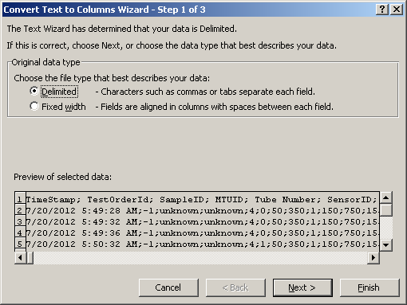
- Select The Delimited and then NEXT.
- Step Two on the Text to Columns Options, Select Semicolon as the Delimiter
- Select Finish.
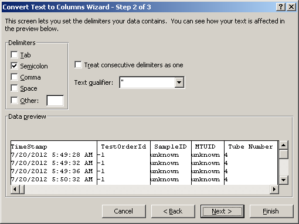
Explanation of the Process Control Data Curve File: Luminometer
- TimeStamp: Pretty self explanatory… is the timestamp of when the process control curve was generated.
- TestOrderID: Test order ID assigned by the system. ID numbers that are -1 occur on curves generated during System Prime.
- SampleID: An ID generated from the barcode scanned into the system during sample loading. ‘Unknown’ ID numbers occur on curves generated during System Prime.
- MTUID: The ID of the MTU scanned when scanned by the input queue MTU barcode scanner.
- Tube Number: This is the tube number of the MTU (ranges from 0 to 4 for tubes 1 to 5). Tube 1 is closest to the MTU barcode and tube 5 is closest to the MTU tab for the distributor hook.
- Sensor ID: The sensor ID indicates which OLV channel generated the curve (0 or 1). The injector only goes in one way… Channel 0 measures the Auto Detect 1 dispenses. Channel 1 measures the Auto Detect 2 dispense.
- USER TIP: Use the sort or filter functions available in excel to look for trending in the data.
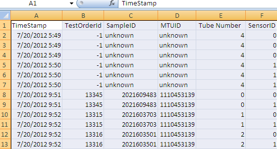
A note on sections of the process control curve known as regions 1 through 4: The Luminometer has 4 regions of interest which are defined by the headers in the curve file.
- The region at the beginning of the curve where air is seen before fluid is dispensed. (high)
- The region of the curve while fluid is being dispensed. (low)
- The region of the curve which has undergone fluid pull back by the LCMP and air is observed. (high)
- The transition region, where fluid is seen during pullback and then transitions to air as the fluid travels back up the injector past the sensor. (low then high)
- Region 1 must pass if region 3 or 4 of the previous injection did not fail.
- For luminometer either region 1, 2, 3 or region 4 need to pass. If region 3 or 4 fails ignore region 1 on the next dispense.
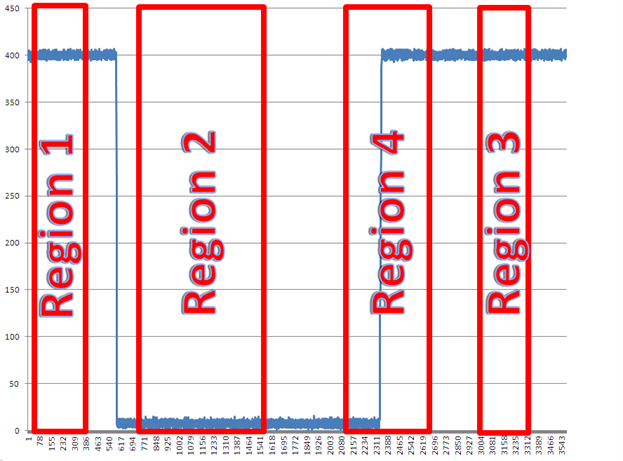
Region 1: Defined by columns labeled Parameter 1, Parameter 2, Parameter 3 and Parameter 4.
- Parameter 1: Value that defines the measurement point of the start of Region 1.
- Parameter 2: Value that defines measurement point of the end of Region 1.
- Parameter 3: Binary number that defines if the region is looking for a high (1/air) or low (0/liquid) signal, which represents the sensor reading from air or fluid, respectively.
- Parameter 4: Value that defines how many points in the region specified by parameter 1 and 2 need to be measured as whatever Parameter 3 specifies (either a high or a low signal) to pass.
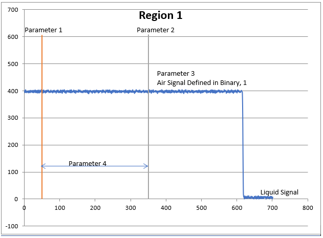
Region 2: Defined by columns labeled Parameter 5, Parameter 6, Parameter 7 and Parameter 8.
- Parameter 5: Value that defines the measurement point of the start of Region 2.
- Parameter 6: Value that defines the measurement point of the end of Region 2.
- Parameter 7: Binary number that defines if the region is looking for a high (1/air) or low (0/liquid) signal which represents the sensor reading from air or fluid, respectively.
- Parameter 8: Value that defines how many points in the region specified by parameter 5 and 6 need to be measured as whatever Parameter 7 specifies (either a high or a low signal) to pass.
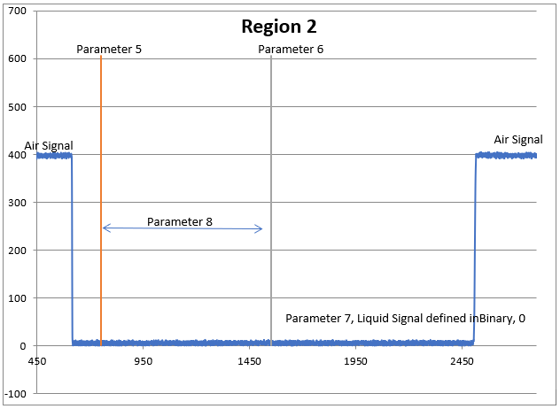
Region 3: Defined by columns labeled Parameter 9, Parameter 10, Parameter 11 and Parameter 12.
- Parameter 9: Value that defines the measurement point of the start of Region 3.
- Parameter 10: Value that defines the measurement point of the end of Region 3.
- Parameter 11: Binary number that defines if the region is looking for a high (1/air) or low (0/liquid) signal which represents the sensor reading from air or fluid, respectively.
- Parameter 12: Value that defines how many points in the region specified by parameter 9 and 10 need to be measured as whatever Parameter 11 specifies (either a high or a low signal) to pass.
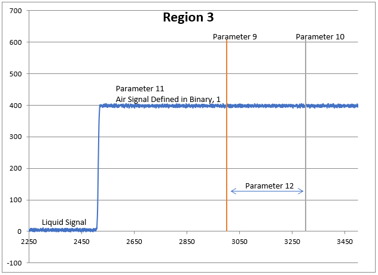
Region 4: Defined by columns labeled Parameter 13, Parameter 14, Parameter 15 and Parameter 16.
- Parameter 13: Value that defines the measurement point of the start of Region 4.
- Parameter 14: Value that defines the measurement point of the end of Region 4.
- Parameter 15: Binary number that defines if the region is looking for a high (1/air) or low (0/liquid) signal which represents the sensor reading from air or fluid, respectively.
- Parameter 16: Value that defines how many points in the region specified by parameter 13 and 14 need to be measured as whatever Parameter 15 specifies (either a high or a low signal) to pass.
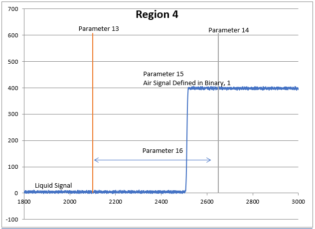
Result 1: This value represents the number of passing points in Region 1. Parameter 4 defines the number of points required in each result to pass.
Result 2: This value represents the number of passing points in Region 2. Parameter 8 defines the number of points required in each result to pass.
Result 3: This value represents the number of passing points in Region 3. Parameter 12 defines the number of points required in each result to pass.
Result 4: This value represents the number of passing points in Region 4. Parameter 16 defines the number of points required in each result to pass.
Graphing the results is a good way to determine where the failed dispenses occurred.
Example: The following chart shows one dispense for Result 2 that fell below the defined number of points required for a good dispense (Parameter 4).
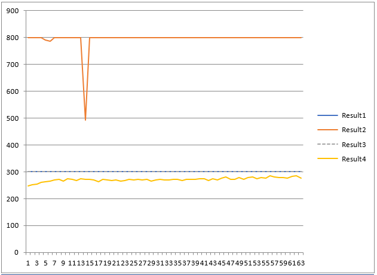
Normal Dispense Curves
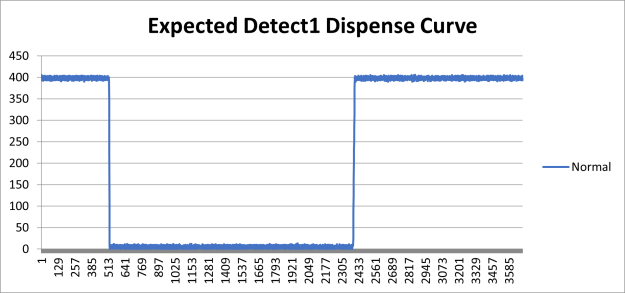
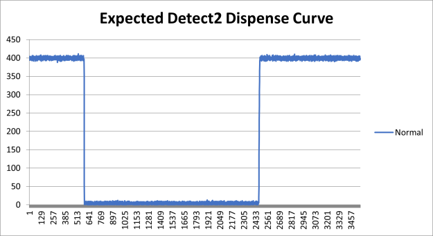
Troubleshooting Examples
Example 1: Loose connectors, air leak etc
Searched for curves that occurred at the time of the error
During Priming of Instrument (Loose connectors, air leak etc)
05/11/2012 08:13:35.630 262.00030 Auto Detect2 A bottle is empty or not connected. Please Check bottle connection.
05/11/2012 08:13:35.787 257.000.00052 Sensor Calibration for Luminometer channel 1 was successfully executed.
05/11/2012 08:16:19.127 257.000.00069 Prime failed. Check universal fluids bottles and repeat prime.
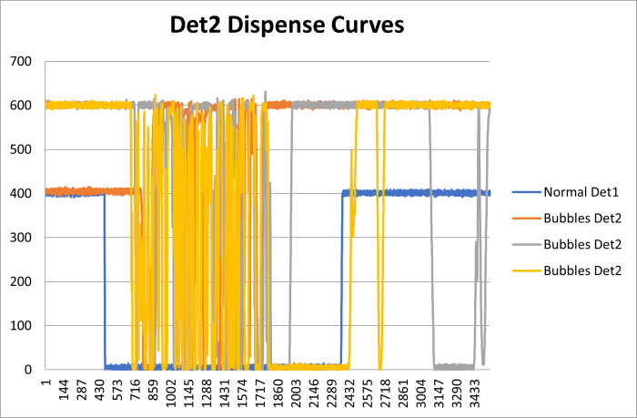
Example 2: Bad OLV Board
Searched for curves that occurred at the time of the error
Druing Priming of instrument (Replacing the OLV board fixed issue, suspect OLV board got wet during troubleshooting)
05/11/2012 08:28:57.893 064.000.00095 Hardware Error:OLV LED Failure; used OLV Duty Value from Flash
05/11/2012 08:28:58. 262.000.00030 Auto Detect2 A bottle is empty or not connected. Please Check bottle connection
05/11/2012 08:28:58.017 257.000.00052 Sensor calibration for Luminometer channel1 was successfully
05/11/2012 08:31:04.107 257.000.00069 Prime failed. Check universal fluid bottles and repeat
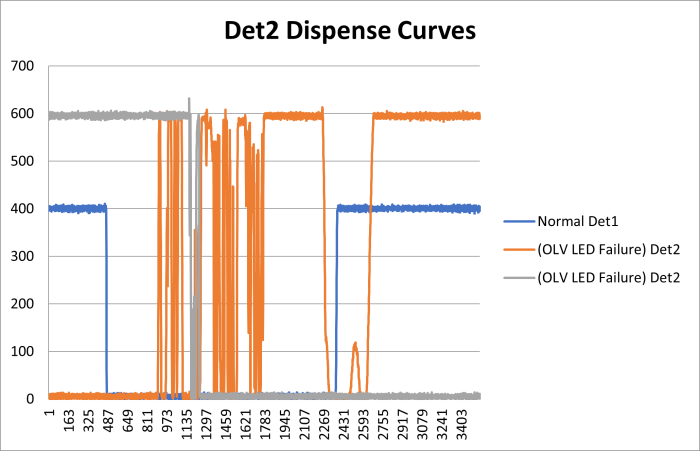
Example 3: LED Failure due to burs in Injector OLV Window
11/15/2011 1:14:35 AM (14 17:14:35)
[D] (Message , Info ) [Luminometer] Hardware Error: OLV LED failure; used OLV Duty Value from Flash ID=5061 PrimeResponse worst event at 01:12:59, start=01:11:18 end=01:14:35 [0x40.0x00.0x005F] [064.000.00095]
11/15/2011 1:14:35 AM (14 17:14:35)
[E] (Critical , High ) [InventoryManagement] Auto Detect 2 A bottle is empty or not connected. Please check bottle connection [262.000.00030]
Also causing OQ execution timeouts (Calibrated OLV board, Calibrated Det2 pump, Replaced OLV board, Replaced Lumo Main PCB, and only replacing the Injector fix issue)
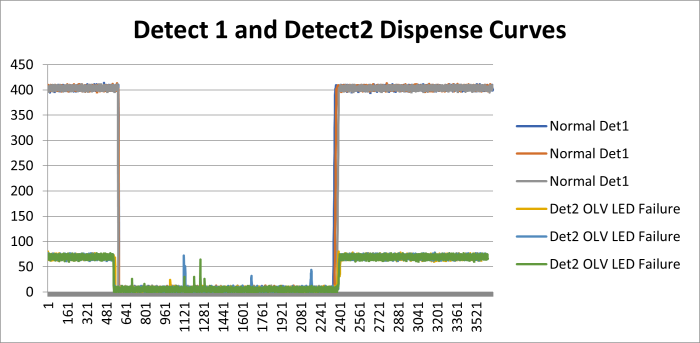
Example 4: Air Bubbles in Auto Detect
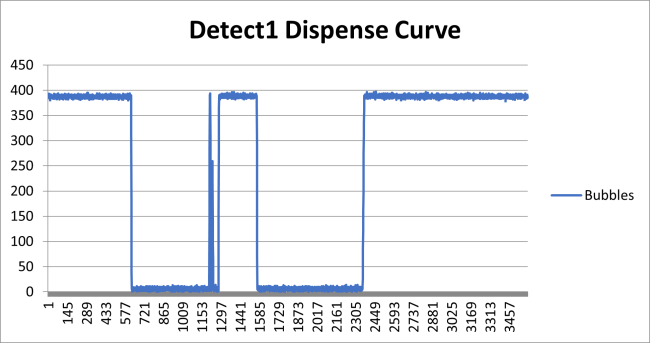
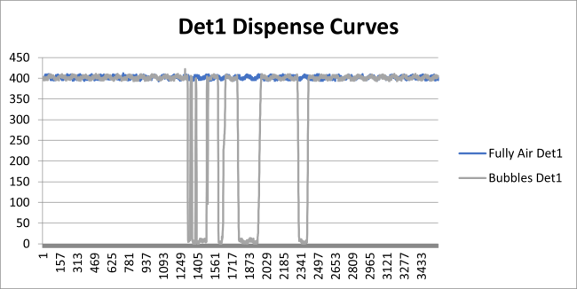
Example 5: This PCL flag is due to a poor-quality pullback of the air/liquid interface in the injector.
According to the OLV curve, the final air region (Region 3) of the prior dispense to marginally low, but not a failure. The next dispense then started with a low initial air region (region 1), which was flagged as a failure.
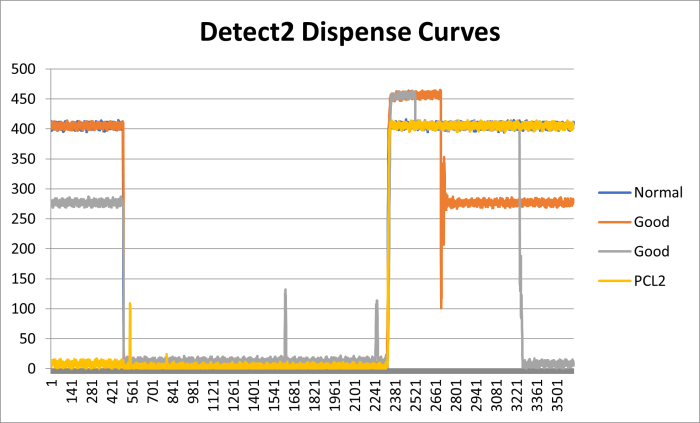
Example 6: Leaky Fittings, small leak
Leaky fittings appear to extend Region 1 and often the air will work its way out of the system only to return when a time delay is introduced. Solution is to check all fittings and bottle connections for leaks.
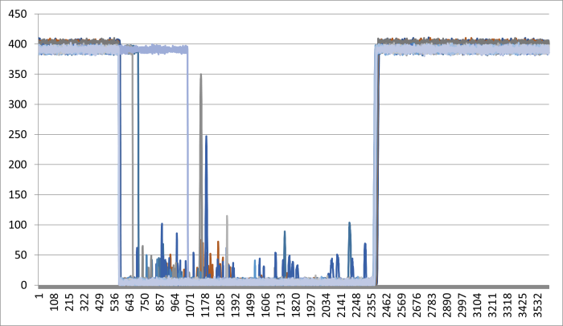
Example 7: Slow Pump Pullback
Pumps with a slower Pullback are characterized by having extended Region 3 and Region 4. In these cases the Pump fails to pull back the meniscus past the OLV window in the injector in the correct amount of time. Solution is to replace the pumps.
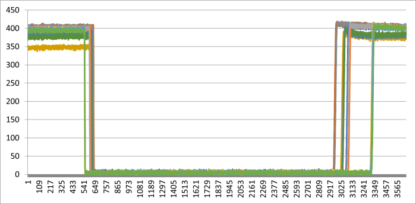
Example 8 blocked Sight Holes
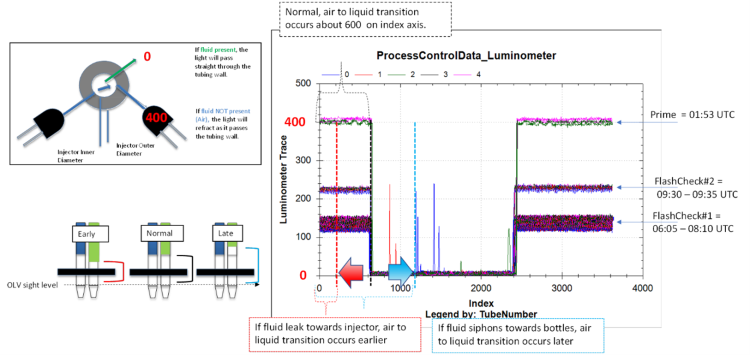
Picture of injector sight holes:
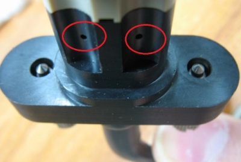
Complaint
AD2 would not pass prime. Looking at the OLV curve, the AD2 baseline (air) was starting much lower than expected (air signal was at ~40, should be ~400).
Resolution
FSE Field Service Engineer. had just soaked the injectors in DI water, and water had gotten into the injector sight holes. FSE cleaned the sight holes of all fluid, and the graph rebounded.
Field Service Engineer. had just soaked the injectors in DI water, and water had gotten into the injector sight holes. FSE cleaned the sight holes of all fluid, and the graph rebounded.
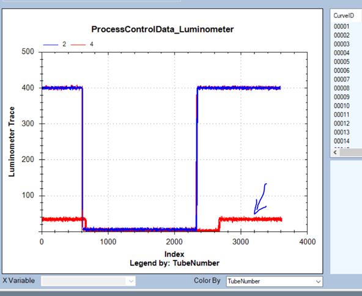
There is no shift along the x-axis, this should rule out leaks, pullbacks, etc.
There is a y-axis shift, which indicates the amount of light that reaches the detector side.
- Partially blocked injector sight holes (most of the times when people inspect this carefully, they will find a fiber in one of the holes)
- Injectors not screwed down into lumo housing
- OLV board or cable (see OLV schematic)
- Lumo PCB (see Lumo schematic)
OLV signal
Flag assignment based on region evaluation:
OQ = good
- Region 2 check passes (this is the liquid phase check)
- Region 1 and/or 3 passes (these are the initial and final air pullback check)
Lumo = good
- Region 1 check passes (this is the initial air check)
- Region 2 check passes (this is the liquid phase check)
- Region 3 and/or 4 passes (this is the final air pullback check)
Time (x-axis) vs Intensity of signal (y-axis)
OLV board or sight hole blockage issue when:
Air to liquid transition is relatively steady (same position on x-axis)
But the starting intensity when x=0, Lumo trace moves around by more than 50 counts.
Normal = 400, partially blocked sight hole is the example below.
Partially blocked injector sight holes
Both ch.0 and ch.1
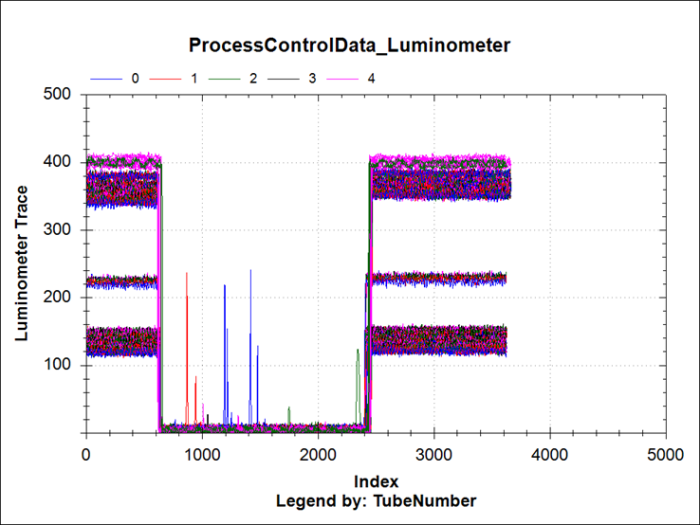
CH.0
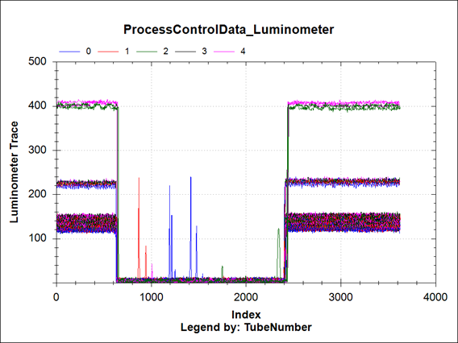
CH.1
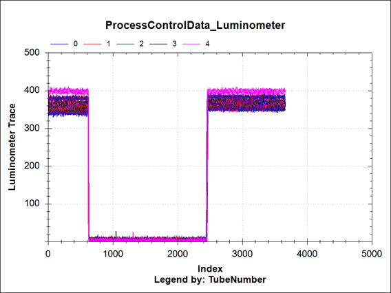
OLV Elevated Start point, sloped pull back
This site, it looks like the Luminometer Injector needs to be replaced again (notice the double hump in the flash curve below, as well as the super funky Lumo OLV curves). Make sure the FSE takes at least 3 injectors, as it can take a few tries to get a passing Flashcheck. These are the steps I would take:
- Attend the site and perform a baseline Flashcheck.
- Check all AD1 fittings (lumo OLV curves from 5/10 show air bubbles in the AD1 line)
- Replace the Luminometer Injector, run prime x2.
- Review OLV curves – do they look back to normal? (Like this: )
Normal Lumo OLV Curve
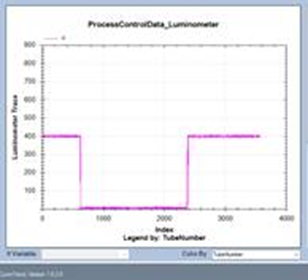
- If the OLV curves do not look normal, replace the Lumo OLV board, reprime, review curves again.
- Run Flashcheck
List of parts to take:
Luminometer Injectors (qty 3)
OLV Board
Flashcheck (qty 2)
Flash Curve with Double Hump:
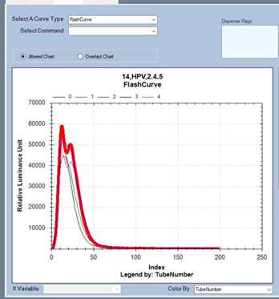
AD2 OLV (not normal- elevated start and end point, and weird slope at the end):
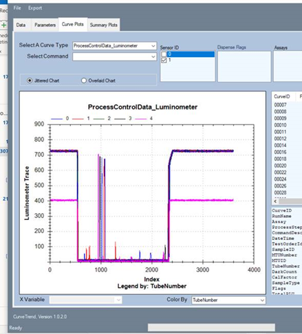
AD1 OLV (not normal, and lots of air bubbles):
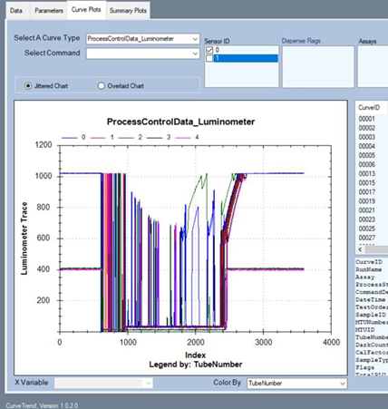
AD1 OLV single MTU
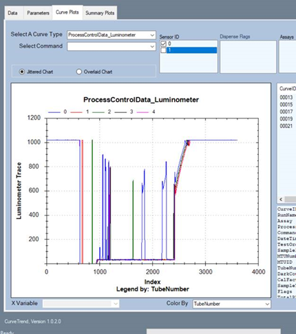
AD pump less responsive
Before
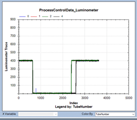
After pump swap
Final flashcheck, not stellar but should be good for AC2 chemistry – a lot better than before FSE went in.
There’s a slight and consistent 3 leading zero delay throughout the Flashcurve data.
However, I don’t seen anything odd with OLV.
I3 = 0.13, ranged from 0.10 -0.16
I25 = all under 0.0008
OLV , AD1, AD2 line up well.
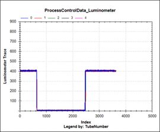
AD2 only- consistently starts a little after 600 and completes pull back a little after 2400.
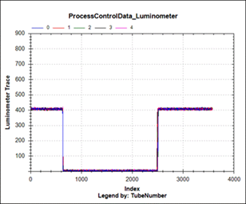
Flashcurve, Pnl-C, not highlighted. There’s the one lower pnl-C total RLU of 895.
Neg control highlighted
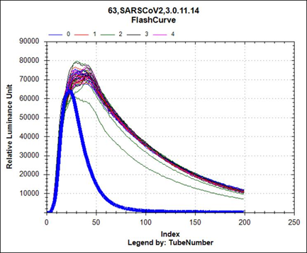
Pnl-Cs, not highlighted
Pnl-As, highlighted
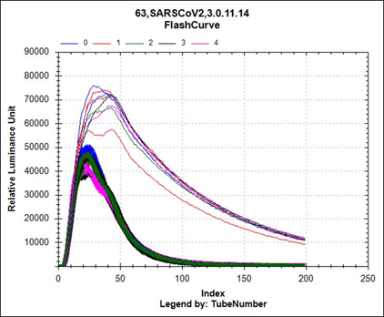
OLV issue
OLV failure at lumo the y-axis intensity is affected.
When the OLV is calibrated the expected air in line reading is 400.
Lumo failure the sampling rate is wrong, e.g. we see instead of roughly 3800 data points, we see 5400.
Pumps aren’t holding prime. Notice there is air in line within 15min.
And then issue is correct by 3rd dispense.
FC#1. (time is in UTC hh:mm:ss)
00:09:26 = Last prime dispense (series1)
00:23:37 = FC dispense #1
00:23:54 = FC dispense #2
00:24:12 = FC dispense #3
00:24:30 = FC dispense #4
00:24:48 = FC dispense #5 (series 11)
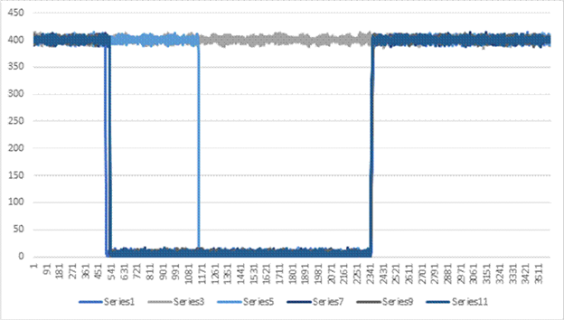
Flashcurve reflects this.
00:23:37 = FC dispense #1, blue line here shows not light off.
00:23:54 = FC dispense #2, Red line is delayed and low intensity.
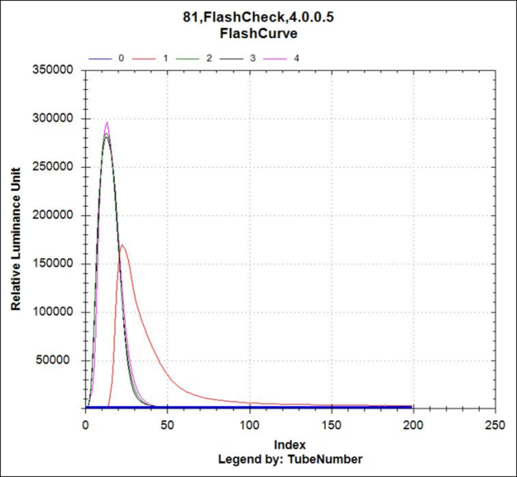
Get curves of priming after replacing OLV incorrectly
PCB connector facing lid effectively crossing the AD1 and AD2 signals.
This caused prime to fail.
Luminometer Dispense Verification System
Luminometer Procecess Control Overview:
The Luminometer uses an optical sensor to verify that the dispensing of AD1 and AD2 has occurred correctly. The sensor assembly is installed in the top part of the Luminometer housing. The injector passes through an opening in the sensor assembly. The sensor assembly consists of two sensors and two emitters attached to a small PCB. The tubing of the injector assembly extends down into the injector and there are four small windows in the injector through which infrared (IR) light passes. The IR generated by the emitter is passed through one window, the injector tubing, and out of the opposite window to the sensor. The amount of IR that passes through the injector varies with the presence of liquid in the tubing. Prior to an injection the fluid in the injector tubing will not extend down to the area adjacent to the dispense verification sensor. After the dispense, a "pullback" occurs where the LCMPs briefly pump in the opposite direction so that the fluid in the tube is again pulled up above the sensor level. This functionality allows dispense verification. The sensor signal contains three distinct time regions: initial air (from previous pullback), liquid dispense, final air pullback. The signal is analyzed in each region to determine if the signal substantially matches the expected air/liquid signal. Small signal discrepancies are allowed, but larger discrepancies will generate an error. The specific region parameters and the acquired sensor signal for each dispense are logged in the ‘luminometer.curve’ file. The air/liquid threshold value is determined by sensor calibration that is performed as part of the system “full prime” routine.
Luminometer Process Control Description:
The OLV system incorporates a liquid/air sensor near the injector orifice. Each dispense is followed by an airgap pullback. This pulls air back up past the sensor after each dispense. Therefore, the subsequent dispense starts with air in the tubing in front of the sensor. The sensor signal for a “good” dispense will start with air (a high signal), then transition to liquid (a low signal) as fluid is dispensed, then remain sensing liquid as the pullback begins, and finally transition to air as the air/liquid interface is drawn up past the sensor. It is important that the sight holes in the injector body remain free from debris, fluid, and dried salt solutions, as any visual obstruction in these holes will result in erroneous failure flags.
The algorithm splits this “air-liquid-air” signal into 4 distinct regions. These regions are each defined by 4 parameters: Start point, end point, criteria (air or liquid), and minimum number of points required to meet the critera. A threshold defined during sensor calibration, as part of full-priming, is used to determine if each data point is considered as “air” or “liquid”. The threshold calculation sets the threshold at 1/3.5 of the way from the liquid value to the air value.
For a dispense to be considered “good”, the following conditions must be met:
-
Region 1 check passes (this is the initial air check)
-
Region 2 check passes (this is the liquid phase check)
-
Region 3 and/or 4 passes (this is the final air pullback check)
If region 3 fails, then region 1 is ignored on the subsequent dispense. This is to eliminate a false failure mode where the air/fluid interface does not pullback cleanly and instead leaves droplets on the inside of the tubing in front of the sensor.
The specific region parameters and the acquired sensor signal for each dispense are logged in the ‘luminometer.curve’ file. Sensor ID “0” corresponds to AD1 and Sensor ID “1” corresponds to AD2.
Luminometer Process Control Troubleshooting
Typically, the process control system will generate failure flags when the system is dispensing air instead of liquid. This may be observed in the curve file data as Region 2 failures. In this case, the instrument should be inspected for:
- An empty AD1 or AD2 bottle
- A disconnected AD1 or AD2 bottle
- Loose fitting in the fluid line from the bottles to the injector
- Damaged fitting or tubing in the fluid line from the bottle to the injector
- Air or occlusion in the fluid line from the bottles to the injector
- Leaky AD1 or AD2 pump
If the injector is dispensing properly and the failure is a false flag due to a problem with the process control system, then the instrument should be inspected for:
- Wet or damaged process control circuit board in the luminometer lid
- Damaged or unplugged process control cable in the luminometer (from the main PCB to the process control PCB)
- Debris in the sight holes of the injector
If the instrument has a luminometer process control system failure, this failure may occur while performing full-prime because the process control system is calibrated during full-prime and is used to check that the bottles are correctly connected during full-prime. The process control system is not exercised during mini-prime.
Output Queue Dispense Verification System
Output Queue Processes Control Overview
The Output Queue uses an optical sensor to verify that the dispensing of bleach and deactivation buffer has occurred correctly. The sensor assembly is installed in the top part of the Output Queue injector housing. The injector passes through an opening in the sensor assembly. The sensor assembly consists of two sensors and two emitters attached to a small PCB. The tubing of the injector assembly extends down into the injector and there are four small windows in the housing through which infrared (IR) light passes. The IR generated by the emitter is passed through one window, the injector tubing, and out of the opposite window to the sensor. The amount of IR that passes through the injector varies with the presence of liquid in the tubing. Prior to an injection the fluid in the injector tubing will not extend down to the area adjacent to the dispense verification sensor. After the dispense, a "pullback" occurs where the peristaltic pump briefly pumps in the opposite direction so that the fluid in the tube is again pulled up above the sensor level. This functionality allows dispense verification. The sensor signal contains three distinct time regions: initial air (from previous pullback), liquid dispense, final air pullback. The signal is analyzed in each region to determine if the signal substantially matches the expected air/liquid signal. Small signal discrepancies are allowed, but larger discrepancies will generate an error. The specific region parameters and the acquired sensor signal for each dispense are logged in the ‘Output Queue.curve’ file. The air/liquid threshold value is determined by sensor calibration that is performed as part of the system “full prime” routine.
Output Queue Process Control Description
The OLV system incorporates a liquid/air sensor near the injector orifice. Each dispense is followed by an airgap pullback. This pulls air back up past the sensor after each dispense. Therefore, the subsequent dispense starts with air in the tubing in front of the sensor. The sensor signal for a “good” dispense will start with air (a high signal), then transition to liquid (a low signal) as fluid is dispensed, then remain sensing liquid as the pullback begins, and finally transition to air as the air/liquid interface is drawn up past the sensor.
The Output Queue Process Control algorithm splits this “air-liquid-air” signal into 3 distinct regions. These regions are each defined by 4 parameters: Start point, end point, criteria (air or liquid), and minimum number of points required to meet the criteria. A threshold defined during sensor calibration, as part of the full-priming routine, is used to determine if each data point is considered as “air” or “liquid”. The threshold calculation sets the threshold at 1/3.5 of the way from the liquid value to the air value.
For a dispense to be considered “good”, the following conditions must be met:
- Region 2 check passes (this is the liquid phase check)
- Region 1 and/or 3 passes (these are the initial and final air pullback check)
The “Non-Deactivated waste” message will only appear to the instrument operator after 4 dispense failures in a row or 6 failures out of 20 dispenses.
The specific region parameters and the acquired sensor signal for each dispense are logged in the ‘Output Queue.curve’ file. Sensor ID “0” corresponds to Buffer and Sensor ID “1” corresponds to Bleach.
Output Queue Process Control Troubleshooting
Typically, the process control system will generate failure flags when the system is dispensing air instead of liquid. This may be observed in the curve file data as Region 2 failures. In this case, the instrument should be inspected for:
- An empty bleach or buffer bottle
- A disconnected bleach or buffer bottle
- Loose fitting in the fluid line from the bottles to the injector
- Damaged fitting or tubing in the fluid line from the bottle to the injector
- Kinked or crushed tubing in the fluid line from the bottle to the injector (** This tubing is very thin walled and can easily kink and occlude, particularly when routed through grommets and clips.)
- Air or occlusion in the fluid line from the bottles to the injector
- Old or worn peristaltic pump tubing
If the injector is actually dispensing properly and the failure is a false flag due to a problem with the process control system, then the instrument should be inspected for:
- Wet or damaged process control circuit board in the Output Queue injector mount assembly
- Damaged or unplugged process control cable in the Output Queue (from the main PCB to the process control PCB)
- Poor quality of the air/liquid meniscus in the injector tubing during pullback. Droplets left behind on the inner wall of the tubing in front of the sensor.
If the instrument has an Output Queue process control system failure, this failure may occur while performing full-prime because the process control system is calibrated during full-prime and is used to check that the bottles are correctly connected during full-prime. The process control system is not exercised during mini-prime.
 button at the top of the page to send feedback, comments, or change requests.
button at the top of the page to send feedback, comments, or change requests.